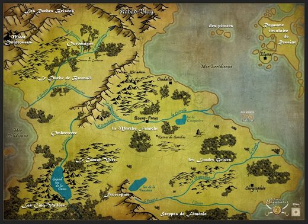

Lieux

Le Vieux Royaume Le château de Garches
Le château de Garches Les Landes Grises
Les Landes Grises La fête des Mille Merveilles
La fête des Mille Merveilles Le volcan Kiriadum
Le volcan Kiriadum Bourg-Preux
Bourg-Preux Le château de Canderas (duché de Bromaël)
Le château de Canderas (duché de Bromaël) L'île de Thalassyr
L'île de Thalassyr- Ciudalia
 Chrysophée
Chrysophée- Le royaume de Ressine
- Les Cinq Vallées
- Rourika
- Kaellsbruck
 La grotte au trésor
La grotte au trésor- Le lac de Croquerive